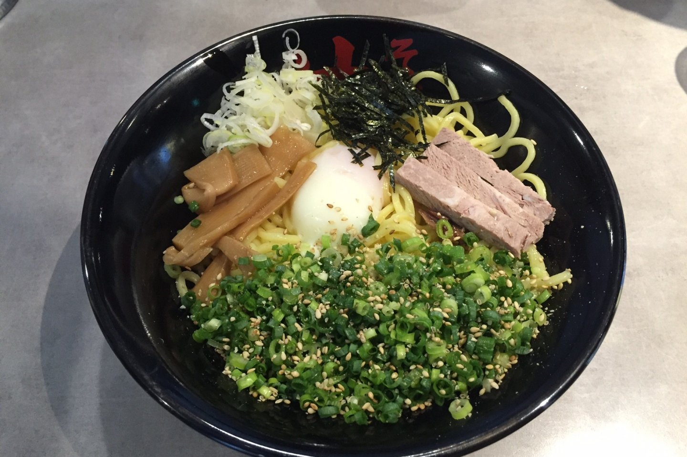

Ramen

Description
Abura soba is a type of ramen that is served without soup. It is mixed with a sauce that is made from soy sauce, vinegar, and chili oil. This dish is also topped with green onions, bamboo shoots, and a soft-boiled egg.
Ingredients
- 1 pack of ramen noodles
- 1 tablespoon of soy sauce
- 1 tablespoon of vinegar
- 1 tablespoon of chili oil
- 1 green onion
- 1 soft-boiled egg
Steps
- Boil the ramen noodles according to the instructions on the package.
- Drain the noodles and place them in a bowl.
- Top the noodles with the soy sauce, vinegar, and chili oil.
- Stir the noodles to coat them in the sauce.
- Top the noodles with the green onions, bamboo shoots, and soft-boiled egg.